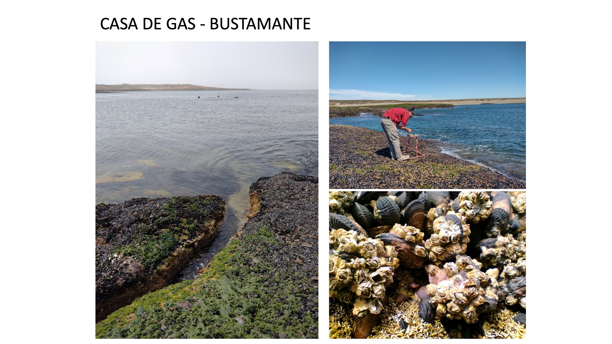
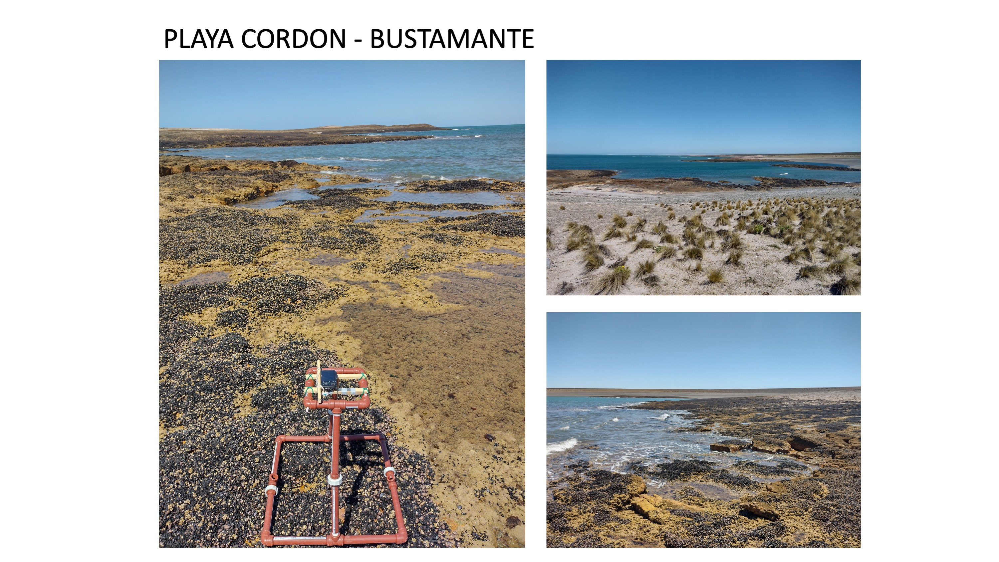
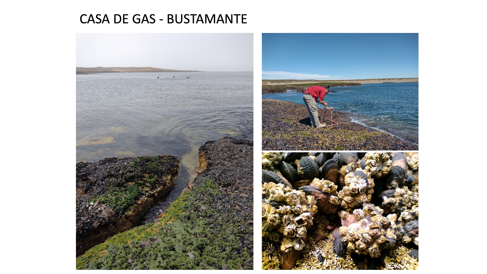
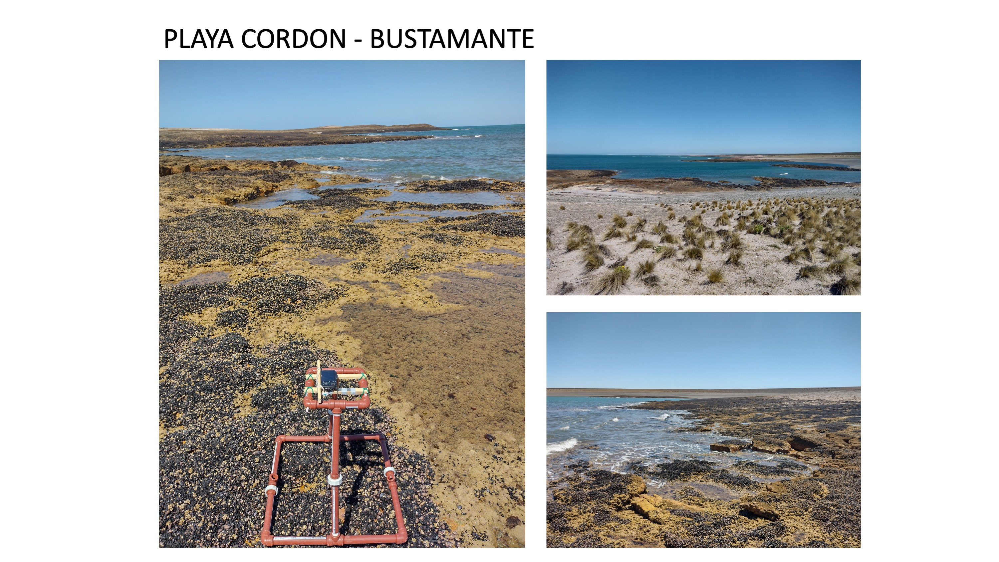

Agenda y Logística del Taller

DIA 1 – Lunes 27 de marzo: Camarones
- Teoría sobre biodiversidad de ambientes intermareales rocosos de
Patagonia
- Protocolos de muestreo con inteligencia artificial
- Demostración de datos previos y plataforma MBON para detectar
cambios de biodiversidad
DIA 2 – Martes 28 de marzo: Bahía Bustamante
- Muestreo intermareal con fotocuadrantes en Parque Nacional sobre
Bahía Bustamante
- Uso de cámaras y equipos para muestreo de biodiversidad
intermareal
- Optimización de fotografías para utilizar inteligencia artificial,
uso de software de imágenes
- Utilización de software de inteligencia artificial para análisis de
biodiversidad marina
DIA 3 – Miércoles 29 de marzo: Camarones
- Manejo y análisis de datos
- Bases de datos abiertas para registros de biodiversidad OBIS
- Análisis de fotografías digitales con inteligencia artificial
DIA 4 – Jueves 30- de marzo: Camarones
- Continuación de análisis de fotografías digitales con IA tomadas
durante la capacitación
- Generación de reporte de indicadores de biodiversidad con tableros
interactivos
DIA 5 – Viernes 31 de marzo: Camarones
- Análisis grupal de los datos subidos, comparaciones con otros datos
de Argentina
- Discusión acerca de aplicación de resultados al manejo de
ecosistemas costeros e implementación en Parques Nacionales Marinos
- Coordinación de muestreos futuros en las distintas localidades
- Entrega formal de equipamiento para muestreo a largo plazo
Algunas localidades a monitotear post taller


© 2021 
DIA 1 – Lunes 27 de marzo: Camarones
- Teoría sobre biodiversidad de ambientes intermareales rocosos de Patagonia
- Protocolos de muestreo con inteligencia artificial
- Demostración de datos previos y plataforma MBON para detectar
cambios de biodiversidad
DIA 2 – Martes 28 de marzo: Bahía Bustamante
- Muestreo intermareal con fotocuadrantes en Parque Nacional sobre Bahía Bustamante
- Uso de cámaras y equipos para muestreo de biodiversidad intermareal
- Optimización de fotografías para utilizar inteligencia artificial, uso de software de imágenes
- Utilización de software de inteligencia artificial para análisis de
biodiversidad marina
DIA 3 – Miércoles 29 de marzo: Camarones
- Manejo y análisis de datos
- Bases de datos abiertas para registros de biodiversidad OBIS
- Análisis de fotografías digitales con inteligencia artificial
DIA 4 – Jueves 30- de marzo: Camarones
- Continuación de análisis de fotografías digitales con IA tomadas durante la capacitación
- Generación de reporte de indicadores de biodiversidad con tableros
interactivos
DIA 5 – Viernes 31 de marzo: Camarones
- Análisis grupal de los datos subidos, comparaciones con otros datos de Argentina
- Discusión acerca de aplicación de resultados al manejo de ecosistemas costeros e implementación en Parques Nacionales Marinos
- Coordinación de muestreos futuros en las distintas localidades
- Entrega formal de equipamiento para muestreo a largo plazo
Algunas localidades a monitotear post taller

